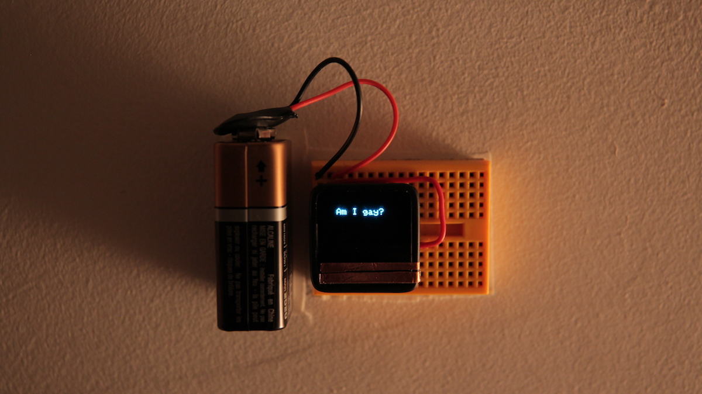

A series using computation as a metaphor for human thought: bare computers work through events from my past, and the processing is made visible as the exposed electronics are touched.
The tiny screen of ‘am i gay?’ prompts visitors to activate its hand-made copper touch sensor. In response, it displays the binary, rigidly algorithmic way I used to question my own sexuality.

The text for the second part, ‘yay brain’, indirectly emerges from continued interaction with its exploded MIDI keyboard. The content comes from documents written in 2012 while experiencing what I now understand as anxiety attacks, attempting to understand them.
There is one more piece planned for the series, which I expect to complete in early 2019.